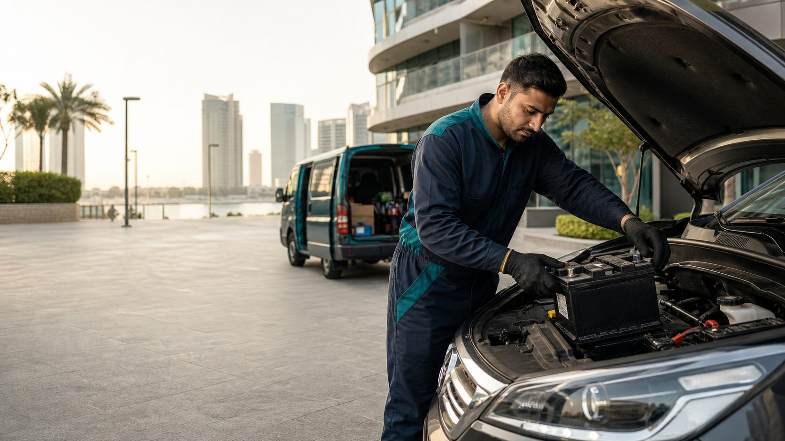

Reem Island
Towers, office car parks and roadside bays across the island, 24/7.
Mobile battery change across Abu Dhabi
A technician comes to the car, tests the battery and charging system, and fits a compatible battery where it is parked. Reem Island is our home base; nearby Abu Dhabi areas are served subject to the current arrival window.

Most visits are on Reem Island itself: residential tower car parks, office basements and roadside bays in Shams Abu Dhabi, Marina Square, City of Lights, Najmat Abu Dhabi, Makers District and around Reem Mall and Reem Central Park. The service runs 24/7 there.
We also travel to Al Maryah Island, Al Zahiyah, the Tourist Club Area and central Abu Dhabi. These visits depend on where the technician is when you message, so we give you the current arrival estimate before you confirm. If it is longer than you can wait, we say so rather than promise a time we cannot keep.
Towers, office car parks and roadside bays across the island, 24/7.
Office and residential parking, subject to the current arrival window.
Building car parks and street parking, subject to the arrival window.
Served when the arrival window allows; ask for the current estimate.
The right battery depends on the make, model, year, engine and whether the car has stop-start. Many newer cars need an AGM or EFB battery, and some European models need the new battery registered to the car after fitting. Send the details or a photo of the current battery label and we confirm a compatible option and the fitted price.
If your make is listed below, its page explains common battery types and fitting notes for that brand.
We stock a range from value options to premium brands. The warranty depends on the brand you choose, and the quote shows it before any work starts.
| Range | Brands | Warranty |
|---|---|---|
| Premium | Bosch, Varta, Panasonic, Mobis | Up to 24 months |
| Mid-range | Amaron, ACDelco, Energizer | Up to 18 months |
| Value | Value brands, availability varies | Up to 12 months |
Message the car's location and details by WhatsApp or call. For a tower or office car park, include the building, parking level and bay number, plus any visitor or security arrangements. For a roadside bay, a pinned location is the quickest way to find you.
On arrival the technician tests the battery and charging system before anything is replaced. If the battery is fine and the fault is elsewhere, you are told so. If it needs replacing, the new battery is fitted at the bay, the car is started and the charging output is checked again, and the old battery is taken away for recycling.
Fitted batteries start from AED 249. The final price depends on the battery size and type your car needs and the brand you pick; AGM batteries for larger European cars cost more than a standard battery for a compact car.
The confirmed quote covers the battery, the mobile visit, standard fitting, the test, removal of the old battery for recycling and the applicable warranty. You approve it before work starts. Payment is by cash, card, Tabby or Tamara.
Battery brands
Choose from premium, mid-range and value batteries. The technician confirms compatibility before dispatch.
 MobisOEM calcium, AGM on stop-start
MobisOEM calcium, AGM on stop-start AmaronHi-Life calcium alloy
AmaronHi-Life calcium alloy ACDelcoMaintenance-free calcium alloy
ACDelcoMaintenance-free calcium alloy ExideFlooded lead-acid
ExideFlooded lead-acid TudorCalcium, maintenance-free
TudorCalcium, maintenance-free DuracellSealed maintenance-free
DuracellSealed maintenance-free EnergizerCalcium, sealed
EnergizerCalcium, sealed FiammTitanium calcium
FiammTitanium calcium SoliteCalcium, low water loss
SoliteCalcium, low water loss CamelFlooded lead-acid
CamelFlooded lead-acid VoltaCalcium, maintenance-free
VoltaCalcium, maintenance-free AutopartAGM available
AutopartAGM available KaysFlooded lead-acid
KaysFlooded lead-acid JPCFlooded lead-acid
JPCFlooded lead-acid SeabingFlooded lead-acid
SeabingFlooded lead-acidVehicle coverage
The requested priority makes are shown in order using our vehicle-data service, with dedicated API-sourced model pages.
 Toyota
Toyota Nissan
Nissan Mitsubishi
Mitsubishi Lexus
Lexus Mercedes-Benz
Mercedes-Benz BMW
BMW Hyundai
Hyundai Kia
Kia Ford
Ford Land Rover
Land Rover Tesla
Tesla MG
MG Geely
Geely Jetour
Jetour Mazda
Mazda Honda
Honda Suzuki
Suzuki Audi
Audi Volkswagen
Volkswagen Chevrolet
Chevrolet GMC
GMC Isuzu
Isuzu Volvo
Volvo Cadillac
Cadillac Jeep
Jeep Changan
Changan Infiniti
Infiniti Genesis
Genesis PorscheRange Rover
PorscheRange Rover Renault
Renault Peugeot
Peugeot Subaru
Subaru Jaguar
Jaguar BYDOmoda
BYDOmoda Jaecoo
Jaecoo Fiat
Fiat MINI
MINI Bentley
Bentley Abarth
Abarth AcuraAiwaysAixam
AcuraAiwaysAixam Alfa Romeo
Alfa Romeo AlpineArcfox
AlpineArcfox ARO
ARO Aston Martin
Aston Martin BAICBAIC BJEV
BAICBAIC BJEV BaojunBAWBeiqiBeiqi HuansuBeiqi WeiwangBestuneBMW Alpina
BaojunBAWBeiqiBeiqi HuansuBeiqi WeiwangBestuneBMW Alpina Borgward
Borgward Brilliance
Brilliance Bugatti
Bugatti BuickCasalini
BuickCasalini Changan Qiyuan NevoChanghe
Changan Qiyuan NevoChanghe CheryCheryExeed
CheryCheryExeed ChryslerCiimo
ChryslerCiimo CitroënCupra
CitroënCupra Dacia
Dacia Daewoo
Daewoo Daihatsu
Daihatsu DatsunDenza
DatsunDenza Dfsk
Dfsk Dodge
Dodge Dongfeng
Dongfeng DorcenDR
DorcenDR DSe.GOEagleElarisEnovateEnrangerEverusEvoluteExeed
DSe.GOEagleElarisEnovateEnrangerEverusEvoluteExeed FAWFAW AudiFAW MazdaFAW ToyotaFAW Volkswagen
FAWFAW AudiFAW MazdaFAW ToyotaFAW Volkswagen Ferrari
Ferrari FiskerFoday
FiskerFoday Force
Force Forthing
Forthing Foton
Foton GACGAC FiatGAC HondaGAC Toyota
GACGAC FiatGAC HondaGAC Toyota GAZ
GAZ GEOGeometryGratour
GEOGeometryGratour Great Wall
Great Wall Haima
Haima Haval
Haval Hawtai
Hawtai Hindustan
Hindustan Holden
Holden HongqiHuanghaiHuansuHuasong
HongqiHuanghaiHuansuHuasong HummerHycan
HummerHycan Ineos
Ineos Iveco
Iveco JAC
JAC JannarellyJettaJinbeiJMC
JannarellyJettaJinbeiJMC KaiyiKarryKeyton
KaiyiKarryKeyton KGMKinglong
KGMKinglong LADA
LADA Lamborghini
Lamborghini Lancia
Lancia LandwindLDVLEVC
LandwindLDVLEVC Li
Li LifanLigier
LifanLigier Lincoln
Lincoln Lotus
Lotus Lucid
Lucid LuxgenLynk&Co
LuxgenLynk&Co MahindraMANMaruti
MahindraMANMaruti Maserati
Maserati Maxus
Maxus Maybach
Maybach McLarenMercedes-Maybach
McLarenMercedes-Maybach MercuryMicrocarMoskvich
MercuryMicrocarMoskvich MoslerNio
MoslerNio Oldsmobile
Oldsmobile OpelOra
OpelOra Panoz
Panoz Perodua
Perodua PlymouthPolarisPolestar
PlymouthPolarisPolestar Pontiac
Pontiac ProtonQiantuQiteng
ProtonQiantuQiteng QorosRabdan
QorosRabdan RamRavonRed FlagRely
RamRavonRed FlagRely Renault SamsungRiichRivian
Renault SamsungRiichRivian Roewe
Roewe Rolls-Royce
Rolls-Royce Rover
Rover Rox
Rox Saab
Saab Saturn
Saturn Scion
Scion SeatSeholSeres
SeatSeholSeres Skoda
Skoda Skywell
Skywell Smart
Smart Soueast
Soueast SsangYongSunraTagAZTank
SsangYongSunraTagAZTank Tata
Tata UAZ
UAZ VauxhallVAZ
VauxhallVAZ VenuciaVictoryVinFastVortexWeichaiWeiwangWeltmeisterWey
VenuciaVictoryVinFastVortexWeichaiWeiwangWeltmeisterWey Wuling
Wuling XiaomiXPengYema
XiaomiXPengYema ZAZZedrivZeekr
ZAZZedrivZeekr ZotyeZotye JiangnanZX
ZotyeZotye JiangnanZXVehicle catalogue snapshot:
FAQ
It depends on your location and where the technician is at the time. We give the current arrival estimate when you message, before you confirm the visit.
Reem Island is covered 24/7. Al Maryah Island, Al Zahiyah, the Tourist Club Area and central Abu Dhabi are served subject to the current arrival window. For other areas, message us and we will tell you honestly whether we can reach you.
Only if the test shows it needs replacing. The battery and charging system are checked first, and if the battery is still usable the technician tells you.
Fitted batteries start from AED 249. The quote you approve includes the battery, visit, standard fitting, test, old battery recycling and warranty.
Usually, yes. Send the building, parking level, bay number and any access instructions so the technician arrives with the right equipment.
Some cars, mostly European models with AGM batteries, need the new battery registered to the car. We do this where the car requires it.
Mobile service across Reem Island
Send the location, make, model and year. We confirm a compatible battery, the fitted price and the current arrival estimate.